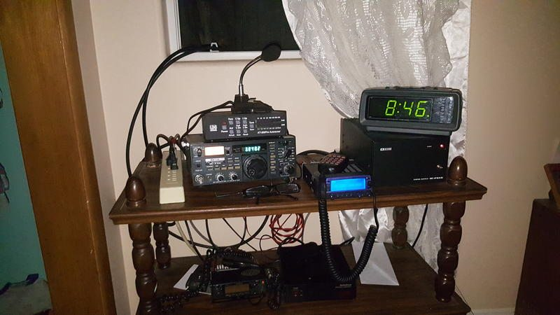
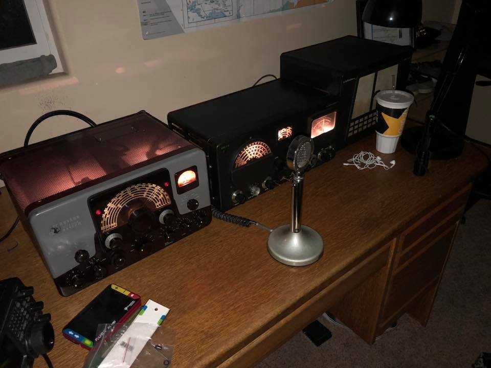

My CB Radio Journey
Here, I share my experiences and setup for CB radio, including the equipment I use and the tips I've learned along the way.
CB radio has been a fascinating hobby for me, allowing me to connect with fellow enthusiasts and explore the world of radio communication. I first got into CB radio in my early teens, my uncle was a big reason why. I wanted to talk to him over the radio, sadly I never got to make that dream come true, he passed a few short years later, before I had a good powerful setup.
My very first experience with CB was the summer of 2013, when I heard operators talking on Channel 6 (called the super bowl) because of the amount of RF power that is needed to be heard on that channel, I wanted to be one of those operators.
My very first radio was a JCpenny brand CB radio, which I received as a gift from my church friend. It was a simple model, but it sparked my interest and set me on the path to becoming a CB radio enthusiast.
My station went from that simple 4w radio to now a bigger, more powerful radio station.
I'm now heard on channel 6, I talk all around the world on the radio with my antenna setup and radios.
Since then, I have upgraded my equipment and learned a lot about antennas, propagation, and radio etiquette. CB radio continues to be a rewarding hobby that connects me with a community of like minded individuals.
My very first Ham Radio Setup

This was my very first Ham radio station Icom IC-730s LDG-300w auto tuner setup, which I used to learn the basics of amateur radio, and learn etiquette, operation and experiment with different antennas.
Radio Stations & Bands
- CB Channel 6 (AM)
- My favorite because it's loud, chaotic, and fun to listen to and the adrenaline rush is unmatched when being heard.
- Johnson Viking Ranger (AM Transmitter)
- This classic transmitter is one of the most reliable AM transmitters from the mid-50s, I was always heard on this transmitter and everyone loved the way my signal came through.
- Ham 75 Meters
- Great band for nighttime contacts when conditions are good best for vintage AM chatter.
- Apache Labs Anan 7000DLE (SDR Transceiver)
- One of the most advanced software-defined radios available on the market, offering some of the most wide range transmit audio (broadcast quality). Once one is heard on the ham radio, it's hard to go back to traditional radios.
Ham Radio

Ham radio, also known as amateur radio, is another hobby of mine that allows me to communicate over long distances using various frequencies. It requires a license to operate, and I have obtained my amateur radio license to legally transmit on these frequencies.
Ham radio offers a wide range of activities, from casual conversations (ragchew) to participating in emergency communications during disasters. I've enjoyed experimenting with different modes of communication, like voice, and digital modes.
My ham radio setup included a transceiver, antennas, and various accessories that enhance my communication capabilities. I've made contacts with operators around the world and have even participated in contests and special event stations.Visit my W6WBJ radio profile my ham radio webpage has more detailed information about my past radio stations.